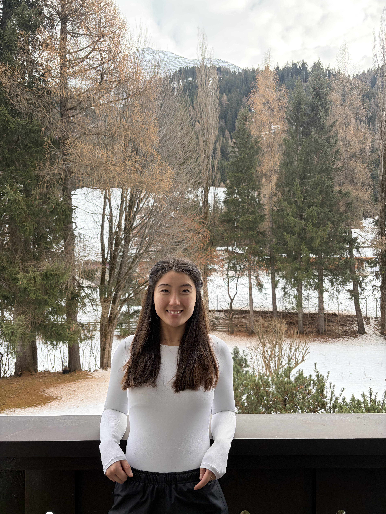
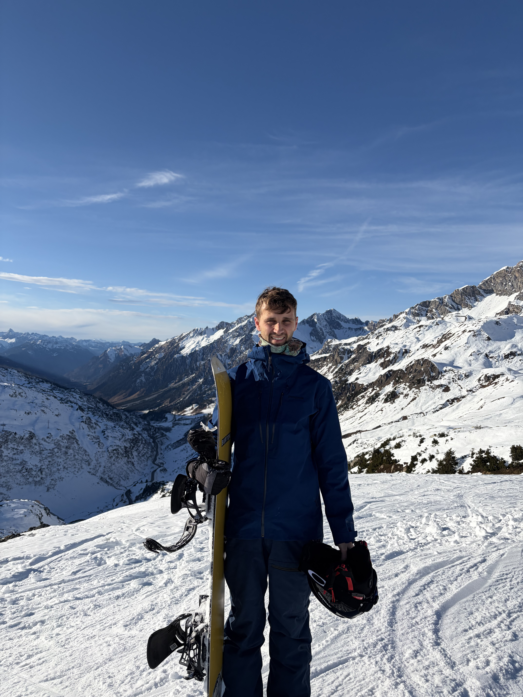
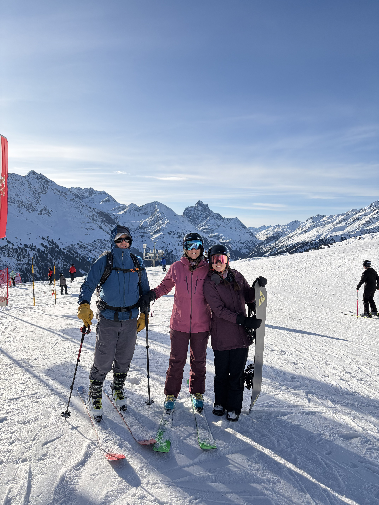
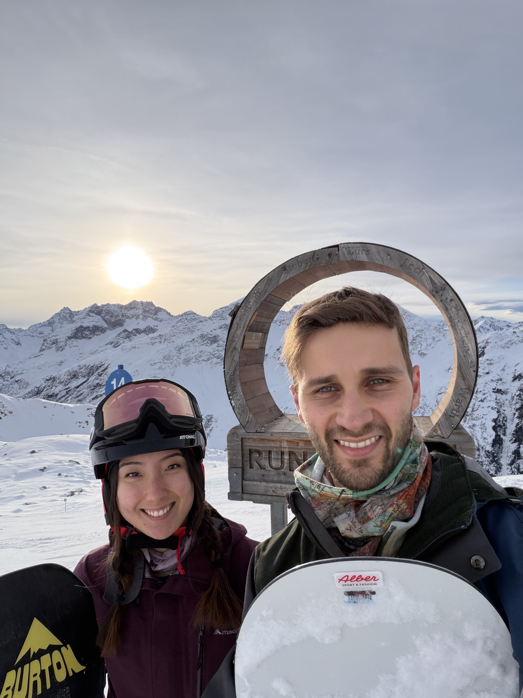
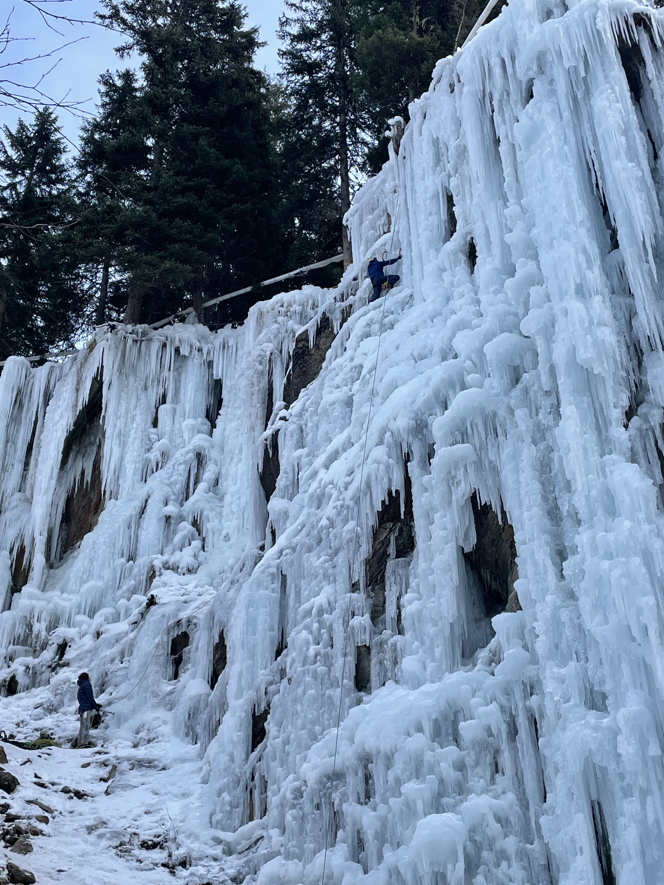
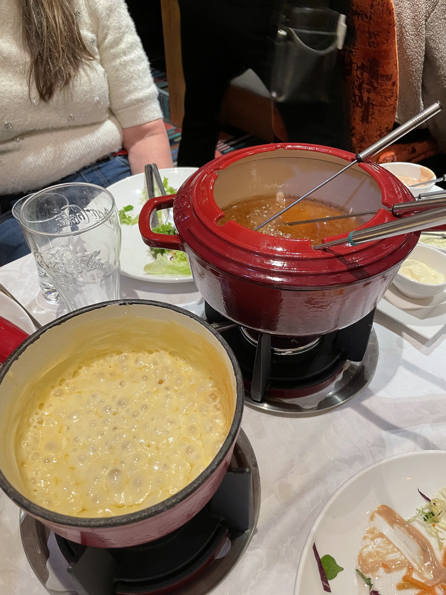
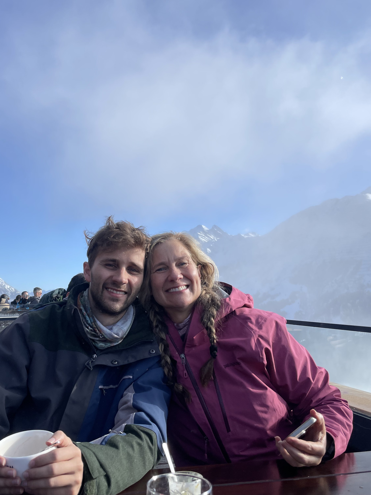

Mum and Dave came back over for another European adventure and so we flitted off to St Anton am Arlberg in Austria to see if we had forgotten how to ski...

19th December 2025
An early start for all of us for a 7:50am flight had us tired but excited for the trip ahead. After a spectacular view coming into Innsbruck, we hopped in our taxi taking us to Dr. Otto Mur, our hotel for the duration of our time in Austria. We got settled in and immediately our thoughts went to hiring our gear for the next few days. We got back and headed back out to check out the town. St Anton is known for its Apres-ski activities and we experienced this first hand at a place called Base Camp. After dark, the lights came on and the music blared! A bit too much for our weary travelling eyes. We retired to have pizza for dinner and caught an early night, ready for a big next day!

20th December 2025
Our first day snowboarding! Unfortunately, the ski season was not so good in this part of the Alps, and in fact across large parts of the world. It was the worst season in 10 years for St Antons with a snow base of only 84cm, largely falling a month prior to our arrival. We didn't let this stop us as we headed up the Nasserainlift and got back to grips with snowboarding. The J-bar cut into barely used snowboarding muscles and our knees shuddered from being asked to bear the bumpy snow which it hadn't seen for almost a full year. But we rallied and enjoyed some good runs during the day. We had explored most of what teh St Anton area had to offer and could now comptently go down some of the blue and red runs on offer with aplomb. An accomplished first day! A lovely dinner at San Antonio capped off with and Apple Strudel made the perfect end to the day.

21st December 2025
We took this day to explore the various other mountains the area had to offer. We ascended and descended together with Mum and Dave, up Nasserain lift, down route 50, back up the Galzig cable car and down into St Cristoph where we stopped for a mid morning drink. Then up the Sankt Christoph chair lift and down our first black run. This black run was NOT GOOD for Sophie and I. Super icy and steep, we both fell a few times but survived and went onto the Schindlergratbahn cable car to one of the highest points on the Valluga mountain. From there we snowboarded down into Rauz, hopped on the Flexenbahn and then back down the ski route into Zurs. All this up and down was super enjoyable for me because each run and lift presented new challenges and views and also allowed me to test out my snowbaording skills. In Zurs we caught a bus into Lech, famous for its ritzy clientele, stopped off for lunch before hopping onto the Bergbahn, a different style of cable car where we sat motionless for at least 15 minutes before finally going up the hill. At lastwe hopped on the Petersboden chair lift, our final lift for the day and took the long run back into Lech. There were a lot more children on these slopes but fortunately, no accidents were had and nother successful outing was made.

22nd December 2025
In the morning Sophie was feeling slightly unwell, so Dave, Mum and I took to the slopes in the beautiful sunny weather. We found a nice wide slope that we had previously only admired from afar and had some soaring runs on it. I mad my way down to check on Sophie at lunchtime and before long we were back up the mountain to check out the Rendl area. This was one of the most enjoyable aspects of St Antons, the ability to explore new areas at the drop of a hat. All we had to do was ski up the Nasserain lift and ski back down to hop on the next cable car to the Rendl area. Unfortunately the slopes were terribly icy and even a bit rocky but we did manage some decent slopes and an awesome view of the area from the top as the sun set. I decided to take the ski run down to the bottom while Sophie took the cable car. I have to say this was the most treacherous run of the lot as most parts were icy. It was a battle going down and I had to often stray off the slope to avoid slipping out on the ice but made for an enjoyable end to the snowboarding portion of the trip. We finally tried an Austrian schnitzel for dinner which filled our bellies. Content, we headed off to a restful night.

23rd December 2025
An early morning for Dave, Mum and I as we got a train West to meet with our guide for the day, Cristoph. We headed to the Taschach Gorge where we would find a man made ice climbing park. We started down an inconspicuous valley where the waterfalls on each side were partially frozen. Eventually we parked and fitted our gear; crampons, harness, helmet and axes. We dropped down into a gorge with running water and trekked 15 minutes before we came to some wooden bridges corssing back and forth across the stream. Further on we encountered sheets of deep blue ice surrounding us with several groups climbing. This was nothing similar to the ice climbing we did in Iceland, this time the features were much more distinct, moving in and out, side to side. We started with a few easier climbs after Cristoph lead the climbs to set up the top ropes. By the fourth climb my forearms were screaming and I was starting a climb on a thin waterfall that was maybe 30cm thick. After getting a few meters off the ground I was about ready to throw in the towel, with my forearms weakening and brain telling me my axe could pierce through the waterfall any second or crampons slip out from there precarious perch. This is the part of these adventures that I enjoy the most, at the edge of my physical and mental capability but I was able to slow my breathing, rest and recover to be able to push another few meters. Before I knew it I was through the hard part of the climb and accomplishment coursed through me. I found that in these climbs I was able to hook my axe in a lot more without swinging to conserve more energy. My seventh and final climb was the tallest, about 20m off the ground, and the hardest. I was apprehensive but cracked on. Again, I astounded myself with my ability to push through my exhaustion and before I knew it I was at the top. On the way down I pulled out the ice screws and reflected on a hard fought day and my best ice climbing yet. For dinner I enjoyed some Tyrolean beef and potatos before enjoying another apple strudel which was delicious.

24th December 2025
Sophie and I needed a slight rest, so we started the day a bit later. It had finally started to snow (not much mind!) but it meant cloudy weather ahead. We had decided to pick up skiing instead of diverting to our usual snowboarding activities. Sophie had never skied before and my last bout of skiing came at least 10 years before, so our expectations were not very high. We started on the bunny slopes to get the hang of it. Although Sophie talked a big game, the first time she put her skis on I looked around for one second to find her sprawled out on the snow as she dived over after she couldn't stop her slow slide. I didn't fair much better initially but after a few false attempts we were gliding smoothly on a very gentle slope. We took ourselves to the J-bar. I'm sure we didn't look like experts, me wildly cannoning down the slope with no control and Sophie slowly twisting down the hill looking like a statue. After a few runs the line got very long and people had no shame about pushing through the line so we abandoned the slopes and headed back to continue to rest. Dinner was a fancy affair, where we had some cheese and oil fondue! I found it delicious and intriguing!

25th December 2025
Christmas Day! Our last full day in Austria and our second day skiing. We headed up to the top of the Nasserainlift to put our ski skills to the test. Mum joined us but Dave decided to skin up the mountain and we would meet him there. We did a few practice runs on the bunny slopes with Mum giving us a few pointers before we decided it was time to step it up and go to the very top of the newly opened Kapall lift. The first few inclines didn't go too badly, although we were somewhat out of our depth, Sophie and I were making tracks as Mum glided down past us. By the bottom Sophie was all out of confidence and was tumbling down more than skiing. We stopped off for a drink and chat before heading towards Glazig for a few more gentle runs. One of my favourite moments was passing Sophie on the slopes, out of control and screaming. As I got to a flat bit, I turned around to see her spinning out and correcting herself on the way to stop next to us. It was the most out of control but smooth bit of skiing I had ever seen. As Sophie and I both grasped skiing a bit better we made our way down the mountain to the Krazy Kangaroo where we ate some lunch. By the time we finished, the Apres-ski vibe was increasing and we enjoyed some of the traditional drinks associated with the occasion... By the time we left, it was dark out and we needed to ski down a bit further despite the slopes looking slightly wonky from our addled vision. A crowd had gathered at the top of the slope, waiting for the entertainment of leavers to attempt the ski down in their state. Although feeling as if the world was spinning slowly, Mum and I made it down the slope but passed by not so fortunate women tumbling down the slope. Dave remained for some extra partying, but from what we heard, had a much more perilous time coming down the slope. After we had a lovely dinner at Cafe Schneider we headed back to pack for our 7am train the next morning to take us back to London.